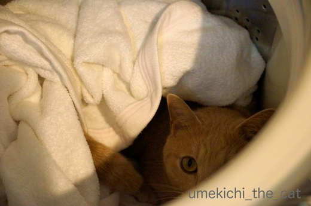
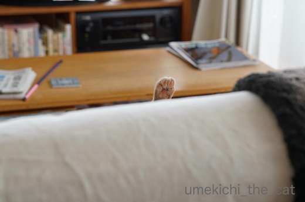
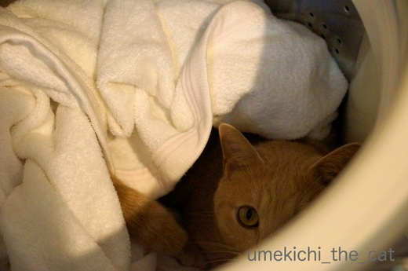
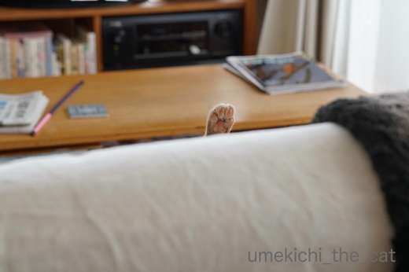

スキマスキーの変形と真夏の恐怖体験 [梅吉]
洗濯槽にタオルケットを放り込み、その場を離れて戻ってきたら・・・・

なんかいる。
（我が家はまだ普通の縦型全自動洗濯機。ドラム型洗濯乾燥機が欲しいなぁ・・・）

![[猫]](https://blog.ss-blog.jp/_images_e/101.gif) なんやねん どかへんで きょうのせんたくはあきらめとき
なんやねん どかへんで きょうのせんたくはあきらめとき
時々洗濯ネットに入った洗濯物をがぶけりしたくなる梅吉さん。
湿った衣類に燃えるみたいです(*>艸<)
大物のお洗濯なので洗濯ネットは使いませんよ。残念でした。
がぶがぶ出来なかった腹いせか洗濯槽に籠城を決め込む様です。
しばし放っておけば飽きるでしょう・・・・・と少しして戻ってみると

こらーーー！寝ないでください！！
もちろんこの後強制撤去しましたよ。
梅吉はこういう狭い所に入るのが大好きです。
幼い頃は洗濯槽で寝ていることもあって姿が見えなくて慌てて探し回ったことも。
先代猫は狭いところが大嫌いでパニックになるタイプだったので
猫らしい梅吉の行動はちょっと新鮮でした。
もうひとつ新鮮だったのが

洗濯ネットに入るのが好きだったこと。（梅吉４〜５ヶ月の頃）
「入ってみる？」と口を開けたら進んで入っていきました(^▽^;)

この中に入って遊ぶのがお気に入りだったんですよー。
洗濯槽も洗濯ネットもスキマスキーの変形でしょうか＾＾
 ↑ガブッと一押し↑
↑ガブッと一押し↑
zombiekongさんのイベント専用ブログ満月広場で心霊写真を募集していらっしゃいます。
心霊写真と言えるか分かりませんが私の恐怖体験を聞いてください。
朝起きると目の前にこんな猫が！
きゃ〜〜〜〜！！！だれ？だれ？梅吉さん・・・？
梅吉さんにとっても似ているけれどもあなたは一体・・・
そのあとも
時々現れる白目の猫。
これは梅吉？それとも何かが梅吉に憑依している心霊現象なのでしょうか？
そして極め付けは

誰もいないはずの椅子の向こうから私を招く手！
きゃ〜〜〜〜〜っ！！
と、この夏我が家に起こった怖い出来事でした (^▽^;)
ガチのお話を期待していた方ごめんなさい。
zombiekongさんも、こんな恐怖体験しかなくてごめんね〜ww

なんかいる。
（我が家はまだ普通の縦型全自動洗濯機。ドラム型洗濯乾燥機が欲しいなぁ・・・）

時々洗濯ネットに入った洗濯物をがぶけりしたくなる梅吉さん。
湿った衣類に燃えるみたいです(*>艸<)
大物のお洗濯なので洗濯ネットは使いませんよ。残念でした。
がぶがぶ出来なかった腹いせか洗濯槽に籠城を決め込む様です。
しばし放っておけば飽きるでしょう・・・・・と少しして戻ってみると

こらーーー！寝ないでください！！
もちろんこの後強制撤去しましたよ。
梅吉はこういう狭い所に入るのが大好きです。
幼い頃は洗濯槽で寝ていることもあって姿が見えなくて慌てて探し回ったことも。
先代猫は狭いところが大嫌いでパニックになるタイプだったので
猫らしい梅吉の行動はちょっと新鮮でした。
もうひとつ新鮮だったのが

洗濯ネットに入るのが好きだったこと。（梅吉４〜５ヶ月の頃）
「入ってみる？」と口を開けたら進んで入っていきました(^▽^;)

この中に入って遊ぶのがお気に入りだったんですよー。
洗濯槽も洗濯ネットもスキマスキーの変形でしょうか＾＾
zombiekongさんのイベント専用ブログ満月広場で心霊写真を募集していらっしゃいます。
心霊写真と言えるか分かりませんが私の恐怖体験を聞いてください。
朝起きると目の前にこんな猫が！
きゃ〜〜〜〜！！！だれ？だれ？梅吉さん・・・？
梅吉さんにとっても似ているけれどもあなたは一体・・・
そのあとも
時々現れる白目の猫。
これは梅吉？それとも何かが梅吉に憑依している心霊現象なのでしょうか？
そして極め付けは

誰もいないはずの椅子の向こうから私を招く手！
きゃ〜〜〜〜〜っ！！
と、この夏我が家に起こった怖い出来事でした (^▽^;)
ガチのお話を期待していた方ごめんなさい。
zombiekongさんも、こんな恐怖体験しかなくてごめんね〜ww

カフェオレ色の梅吉

梅吉 2023年8月10日 永眠


梅吉と出会った譲渡会

犬猫の理由なき殺処分ゼロ
妄想広告
UMEKICHI 光

爆発的に早い！
時々攻撃的！
Thanks to Mr.Boss365
爆発的に早い！
時々攻撃的！
Thanks to Mr.Boss365

洗濯機の中に可愛い子が♪
にゃんこさんは本当に狭いところが
好きなのですね！
白目（笑
わが家にも毎日のように現れます(;^_^A
肉球が誘っている！！
これはたまりません！！！
by きぃ (2017-09-15 16:48)
梅吉さん、凄いところにインしてますね！
気がつかないと危ないですね(^^)
by ma2ma2 (2017-09-15 18:56)
洗濯機IN、かわいい〜！！
もういっそ、梅吉さん専用洗濯機を購入されてはいかがでしょう(^^;
by も〜 (2017-09-15 19:49)
最初の白目写真最高ですね!! 招く手もコワイです~。前回の浮遊写真と合わせて満月広場にいただきまーす。ダメって言っても貰っちゃう。どれも凄いんだもの。
by zombiekong (2017-09-15 19:58)
洗濯機猫さんは初めてです。ビックリです(^-^;
洗濯機、間違って回さないか心配で心配で。
白目の梅吉さん、コワカワです(^^♪
by riverwalk (2017-09-15 20:43)
何が楽しいのか、洗濯機の中好きですよね！
ウチも縦型、二層式じゃないだけ新しい？！(*^▽^*)
驚異の白目連続写真♪
ここまでくると何かが梅吉さんに憑依しているのか、小さいおじさんに梅吉さんが乗り移っているのか、わからなくなりそうです(^▽^;)
招く猫手を掴んだらどうなるんだろう～やってみたい～でもこわ～い♪
by ゆきち (2017-09-15 20:45)
洗濯ネットの梅吉さん、災害時に洗濯ネットは良い避難袋になりませんか？
それにしても、『朝起きると目の前にこんな猫が！』の梅吉さんは違反ですよ（笑）
強烈すぎて、たまりません（笑）
招く手は怖いっす。
ヒュ〜ドロドロとかなったら、勘弁してほしいで（笑）
by kiki (2017-09-15 21:53)
梅吉ちゃんこのまま洗濯機の中でぐるぐるまわりたったのか？油断できませんね～
by みぃにゃん (2017-09-15 22:06)
洗濯機の中で寝ている梅吉さんが可愛い♪ ^^)
白目の寝顔、まさに「落ちてる」って感じですね。^^;
by yes_hama (2017-09-15 22:08)
梅吉さん、前世は「洗濯物」だったの？！
かわいいお顔と白目のギャップがたまらない～♡
肉球お手々の全貌を知りたいです。どんな格好で
「はーい、先生！」ポーズしてたのでしょう。。
by うっかりくま (2017-09-15 22:33)
梅吉さん、洗濯機の中にIN出来るジャンプ力がおありなんですね( ^ω^ )
さすがです=(^.^)=
うちのニケは蓋が開いてるのに気付かず、洗濯機の上に飛び乗ろうとして、
そのまま洗濯槽に落ちて「助けて〜」と泣き喚いてたことがありますw
夏の怪談、目が覚めた瞬間にこの白目は「ひっ」ってなるかと思いますが、
私の場合は、目が覚めてこんなに近くにいてくれたら幸せに浸って
白目に気づかない可能性が(⌒-⌒; )
by ニッキー (2017-09-15 23:11)
我が家の子猫さんも洗濯をお手伝いしてくれますけど
このお手伝いは強烈ですね。
と思っていたら、もっと強烈な心霊写真が（爆）
by ぽちの輔 (2017-09-16 06:08)
おぉぉ(@@;) 異界から、梅吉さんが招いている〜(◎o◎)／
いったい、ナニが憑依していたのでしょうねぇ♪ 貧乏神?!（やだよぉ）
洗濯槽のなかで籠城･･･そのまま回すと、梅吉さんが白猫になってたりして(^m^)
by のらん (2017-09-16 07:48)
うわ〜怖い。狭いところが好きなのはいいけど、
洗濯機にはいっちゃうなんて、絶対ダメよ〜！！！
肉球の出ている全体図が、どんなだか、想像もつきません？？？
by nachic (2017-09-16 11:14)
ぎゃあ～、可愛い～！！！大好きなママの香りがしたのかな。安心したら眠くなっちゃったのかな。もう・・・(*ё_ё*)きゅん・
by Ginger (2017-09-16 12:29)
家も普通の縦型です～。
ドラム式。置くスペースがないかも・・・( ；∀；)
洗濯槽の中。家族の匂いがするのかな？家もたまに入っている子が
「〇〇いたから洗濯できなかったんだ～」なんて言い訳にしてみたりｗ
洗濯ネットの中の梅吉くんも可愛いね～。
これ病院に行くときにいいんだよね。
普段だとこんなに可愛いんだ♪もぞもぞ動き回ったのかな？
満月広場も見たよ！！
ひぃ～～～ｗ
by emi (2017-09-16 17:12)
ガチよりカワイイです梅吉くん。
怖くはないけど^m^
ネットの中の真四角な感じも
連続白目大会も、
肉球♪も！
ちなみにうちはドラム式なのですが、
普通の縦型にもどりたい派です^^;
by ふにゃいの (2017-09-16 17:18)
洗濯ネットに入って、かつ、棒を抱え込んでます？
不思議な生き物だあ！梅吉君の寒天寄せ？(いきもの？)
ソファから手招きするにくきう！こわっ！こわかわ！
by BillK-ko (2017-09-16 18:16)
梅吉さん、完全にイタコ状態ですね＾＾
洗濯ネットにすっぷり入ってる～。かわいいな～。
うちのあかりは、爪切りをさせてくれないので、テレビで
みた洗濯ネット作戦を試してみたのですが、
全然ダメで、今では私がネットを持ってるだけで
ぶっ飛んで逃げていきます(´；ω；`)
by マーヤ (2017-09-17 01:18)
きぃさん＞そうそう＾＾
Leaちゃんの白目もコワカワですよね(*>艸<)
肉球に誘われて・・・肉球のアチラの世界も魅力的かも！？＾＾
ma2ma2さん＞洗濯機に入っているときは必ずアピールしてきます (^▽^;)
スルー不可ww
なんてったって「かまってちゃん」ですから！！
も〜さん＞洗濯機式揺りかごですね(*>艸<)
リサイクルショップに行ったら小さめのが5000円ぐらいでありますよね・・
って買いませんから〜ww
zombiekongさん＞招く手・・・コワイでしょ〜。
でも招かれたあちらの世界が気にもなりますw
ブログの写真はお好きに使ってくださいませ^^
riverwalkさん＞ユキちゃんモモちゃんは入らないのですね。
梅吉は洗濯槽に入っている時は必ず「ここやで」とアピールしてきます(^_－)☆
幼い時のやんちゃぶりから梅吉が今どこにいるのか必ず
チェックする癖もついているので大丈夫ですよ〜＾＾
ご心配ありがとうございます。。
ゆきちさん＞洗濯槽のうすぐらしめっぽな感じが落ち着くのでしょうか(^▽^;)
ウチの洗濯機を自慢できるのは未だ二層式の実家ぐらいしかありませんww
招く手を掴んだら・・・ニャンコの世界に潜入！？
わ〜、カメラを忘れないようにしなくちゃ！ですね！！
戻ってこられない時はそのまま猫に生まれ変わる？それも良いかも・・・
kikiさん＞病院へ行く時、キャリーを嫌がったらという思いもあったのですが
梅吉はキャリーも好きなのでその使い方はせずに済みそうです＾＾
強烈にブチャイクな写真がまたね〜、下僕心を鷲掴みです！！
招く手、握って見たら夢見心地かもしれませんよ(^_－)☆
みぃにゃんさん＞出来ればハムスターみたいに自力で回して欲しいですww
yes_hamaさん＞可愛いまあるい後頭部に一瞬洗濯を諦めそうになりました^^;
白目の寝顔、落ちすぎですよねーww
うっかりくまさん＞前世は洗濯物！だから水も怖がらないし
洗濯ネットにも入っちゃうものかな(*>艸<)
「はーい、先生！」実はお手手ではなくて後ろ足なんですよ＾＾
くわっと脚を開いてお股のお手入れをする時片足だけぴーんと上がります。
その脚だけ背もたれの向こうに見えていたのでした！
ニッキーさん＞いきなり暗い穴のような洗濯槽に落ちてしまった
ニケさんの泣き喚きがお気の毒なやら可笑しいやら(*>艸<)
目覚めの瞬間の顔近は鼻息のおまけ付きですよ！
そんな幸せがニッキーさんにも訪れますように〜( ^ω^ ）
ぽちの輔さん＞確か子猫さんは洗濯カゴにお入りになる
お手伝いをなさっていたような・・・・
梅吉は日に一度は必ず憑依されて白目になっているので
我が家自体が恐怖の館なのかもしれません (^▽^;)
のらんさん＞梅吉に憑依していたのは白目が得意な（得意じゃないか）
月影先生！？（by ガラスの仮面）
梅吉もあのように伝説となってくれると良いなぁ・・・(*>艸<)
nachicさん＞洗濯機は中を確認してから電源を入れるようにしていますよー＾＾
いたずらっ子の梅吉がいるので我が家にはそういう自衛策（？）が
色々です(^▽^;)
招く肉球写真の全貌はお股をお手入れ時にぴ〜んと上がっちゃう
後ろ足、でした。
そんな格好でお股のお手入れするの梅吉だけかなぁ(＠◇＠)
Gingerさん＞薄暗くて、おかーさん臭がして安心、
そしてお手伝（かなりメイワク(⌒_⌒;）ときたら張り切っちゃう梅吉でした＾＾
emiさん＞洗濯ネットに入るかな？と思ったのは病院対策もあったのですが
梅吉、キャリーに進んで入る子なので今後も（遊び以外は）出番はなさそうです^^;
洗濯ネットごしにおもちゃを動かすとそれはもう大変お喜びになって・・・
「とれそうでとれへん！なんでや！！」と暴れまわっておりましたー。
洗濯ネットもビリビリになったよ(*>艸<)
ふにゃいのさん＞洗濯ネットはぴったりサイズすぎて四角な感じに(*>艸<)
ドラム式って使い難かったりするのかな。。。
縦型の高スペックというのもありなのかもしれませんね〜。
BillK-koさん＞うっすら中が透けているところが寒天っぽい(*>艸<）
切っても切っても梅吉の顔が出てくるような金太郎飴みたいなの
目指しますわwww
肉球の誘う世界へ行って見たいと思いませんか〜♪
マーヤさん＞はい＾＾取り憑かれてますよね(*>艸<)
あかりちゃんは洗濯ネットがトラウマに！？
ぶっ飛んで逃げていく様子、想像しただけでニヤニヤです！
by ちぃ (2017-09-17 13:03)
ぶふふ♪![[黒ハート]](https://blog.ss-blog.jp/_images_e/136.gif)
うめ吉さんオモロイ
ママさん最高！
私 以前
洗濯機にバッグ入れたまま
スイッチon
キャー！
預金通帳 サイフ アドレス帳
ティッシュ ハンカチ 鍵
新聞紙の上で乾かして
泣きながらアイロン掛け…
アホやん｡。
by ヨッシー (2017-09-17 16:18)
梅吉さんの寝顔、いつも夜中にクスッ・・っと笑かしてくれてます。
by yuppie (2017-09-17 21:35)
洗濯機の中で寝ないでー！＾o＾
洗濯ネットって入るもんなんだ？ふしぎな形に＾＾；
寝顔、すてきです～
目が冷めて目の前に、白目があったら‥きゃー！！！
お手手が見えても怖くはないです～かわいい♪
by sana (2017-09-18 00:22)
梅吉君、洗濯機の中で寝ないでーーー(笑)
でも気持ちよさそうですね〜〜ｗｗ
うちもまだ縦型全自動洗濯機だよ。一時期調子が悪くなって、そろそろ買い換えか？って思っていたけど、レンジが先に壊れて、そしたら洗濯機、なぜか復活してちゃんと動いてるの(笑)
洗濯ネットに入るの、うちも好きだわー。あおがｗｗ
あ〜、今日もたくさんの白目を見て
にやにや出来ました。幸せぇーーー^^
by リュカ (2017-09-18 11:21)
ヨッシーさん＞昨夜は風も雨も思ったほどではなく
静かに過ぎて行きましたね。
飛んでいくお家も見えなっかたのでヨッシーさんはご無事かと＾＾
洗濯機にバッグごととはなんと大胆な！
アイロン掛けも大変そうですが
くずくずになったティッシュを取り除くのも大変そうです(^▽^;)
私も時々やるんですよね〜、ポケットに入れたままのティッシュ( ；∀；)
yuppieさん＞おやすみ前のひと時にふっと気の緩む時間だと嬉しいで〜す(^_－)☆
sanaさん＞あんまり喜んで入る猫はいないと思のですが
梅吉はなぜか洗濯ネットがお気に入りで・・・(^▽^;)
目覚めの白眼は強烈ですよー。
「写真撮らなきゃ！」って眠気も吹っ飛びます。目覚ましアラームより良い！！
リュカさん＞家電ってなぜか復活する時がありますよね〜。
家の洗濯機もちょっと怪しい動きをする時があるんだけど
「がんばれ！」って励ましたら頑張ってくれてます(*>艸<)
白目で夏の総決算！ニヤニヤしていただけた？よかった〜ヾ(*ΦωΦ)ﾉ
by ちぃ (2017-09-18 14:27)
白目写真1枚目!!ここまで白目は初めて見ました～～～(゜o゜)確かに目覚てこの目が間近にあったらびっくりするかも！でも「その白目も可愛いよ～」って言ってるんでしょうね(笑)
by palpal (2017-09-18 16:28)
palpalさん＞その通りっ！！！
「白目もいいでしゅね〜。」「しじみみたいでいいでしゅね〜」
ですから(*>艸<)
by ちぃ (2017-09-18 17:10)